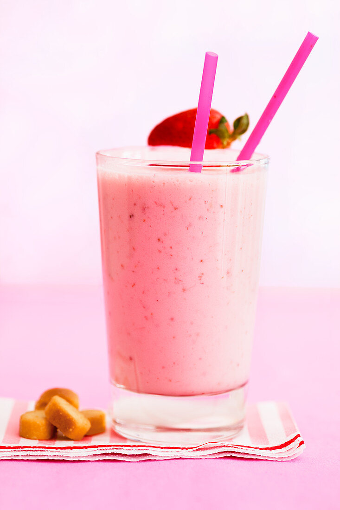

Strawberry Lassi

Description
Lassi is a refreshing cool drink also used as a light dessert during summer.
Ingredients
- 9 ripe strawberries, rinsed
- 2 tablespoons white sugar
- ¼ cup whole milkr
- 1 cup low-fat yogurt
- 3 ice cubes
Steps
- Cut 3 strawberries into small pieces and set aside. In a blender, place the remaining strawberries and sugar; blend on high speed for 30 seconds. Pour in the milk and blend another 30 seconds. Add the yogurt and blend on high speed for 1 minute.
- To serve, place 1 ice cube in each of 3 glasses and pour in the lassi. Top with the strawberry pieces and serve.